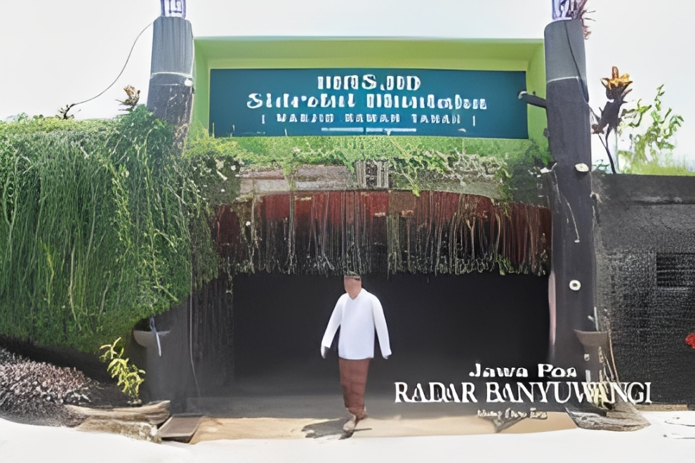
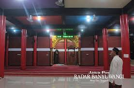
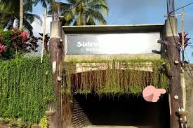

Masjid Bawah Tanah Glenmore
Masjid Unik yang dibangun di Bawah Tanah dengan Kedalaman 5 meter
Galeri Foto



Informasi Detail
Masjid Bawah Tanah Glenmore, atau bernama resmi Masjid Sidratul Muntaha, adalah masjid unik yang berlokasi di Desa Karangharjo, Kecamatan Glenmore, Kabupaten Banyuwangi. Masjid ini dibangun di bawah permukaan tanah dengan kedalaman sekitar 5 meter. Masjid ini kini menjadi objek wisata religi yang menarik banyak pengunjung dari dalam dan luar negeri, termasuk dari Malaysia.
Keunikan
- Dibangun di Bawah Tanah: Masjid ini berlokasi sekitar 5 meter di bawah permukaan tanah, di lahan bekas kolam ikan yang tidak produktif. Gagasan ini muncul karena kondisi lahan yang sudah cekung.
- Dibangun Tanpa Arsitek Profesional: Pembangunan masjid tidak melibatkan arsitek khusus, melainkan dirancang sendiri oleh pemiliknya dan dikerjakan oleh sekitar 25 tukang lokal dari desa setempat.
- Ornamen Batu Kali: Dinding masjid dihiasi dengan ornamen batu kali, memberikan nuansa alami dan berbeda dari masjid pada umumnya.
- 60 Pilar Penyangga: Terdapat 60 pilar beton yang berfungsi sebagai penyangga atap, menambah kesan megah di dalam struktur bawah tanahnya.
- Beduk Raksasa: Di dalamnya terdapat beduk berdiameter 2 meter yang didatangkan khusus dari Bandung.
- Suasana Sejuk dan Tenang: Lokasinya yang berada di bawah tanah membuat suasana di dalam masjid terasa sejuk, adem, dan tenang, membuat jemaah betah berlama-lama.
- Filosofi Mendalam: Pembangunan di bawah tanah juga disebut memiliki filosofi tersendiri, yang dikaitkan dengan bekal kematian.
- Destinasi Wisata Religi: Selain sebagai tempat ibadah, keunikannya menjadikan masjid ini sebagai objek wisata religi yang menarik banyak pengunjung, bahkan dari luar negeri seperti Malaysia.
Aktivitas yang Bisa Dilakukan
- Melaksanakan Sholat
- Itikaf (Berdiam Diri di Masjid Untuk Beribadah)
- Mengikuti Kajian Keagamaan
- Menikmati Arsitektur Unik
- Menimba Keberkahan
- WIsata Religius
- Melihat dan Mengamati Beduk Raksasa
Info Praktis
- Lokasi: Jl. Raya Ps., Karangharjo, Kec. Glenmore, Kabupaten Banyuwangi
- Biaya Masuk: Tidak ada biaya masuk atau tiket untuk mengunjungi masjid ini.
- Waktu Terbaik Berkunjung: Di luar waktu salat wajib untuk menghindari mengganggu jemaah yang sedang beribadah
- Transportasi: Dapat Diakses dengan berbagai pilihan moda transportasi
- Akomodasi: Di sekitar Kecamatan Glenmore, tersedia beberapa pilihan akomodasi, mulai dari penginapan sederhana hingga hotel
Peraturan Kunjungan
- Berpakaian Sopan dan Tertutup
- Menjaga Kebersihan
- Menjaga Ketertiban dan Ketenangan
- Melepas Alas Kaki
- Menjaga Adab saat Berfoto
- ematikan atau Mengcilkan Volume Posel
- Tidak Merokok
- Tidak Membawa Hewan Peliharaan